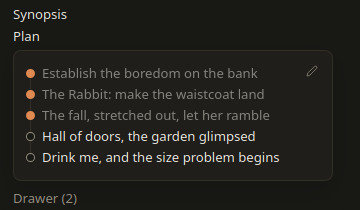
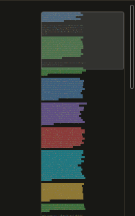
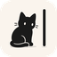

Good
This landed.
Don't touch it. Frame it.
Free The writing app for novelists
Mari is a free writing app built for the part most tools forget: revision. Colour-mark every passage the way you already judge it in your head, leave yourself a note, then rework it side by side until it sings.

The second draft problem
You reread a chapter and you just know. This paragraph stays. This one's flabby. This scene belongs three chapters earlier. And this line? No idea yet.
Then it all goes into a notes file that's useful out of date by Tuesday.
Mari puts your judgments on the text itself, and gives you the tools to act on them.
Try it, right here
It's a first draft. It has problems. Click any sentence and give it a verdict, exactly the way you would in Mari.
The rain fell down from the sky above, wetly. Detective Hale stood in the doorway and looked at the body, which was dead. He had seen a lot of bodies in twenty years on the force, but none of them had ever been wearing his coat. Somewhere a dog barked, or possibly it was a different dog.
He reached for a cigarette, remembered he'd quit in March, and put the empty hand back in his pocket as if it had done something wrong. Then he very slowly and very carefully walked very quietly across the room. “Nobody touches anything,” he said, to nobody.
The highlights
Select a passage, press Alt and a number. Done. Your verdict sits on the words themselves, not in a file somewhere else.

This landed.
Don't touch it. Frame it.
Fine, but provisional.
Good enough, until it isn't.
Small changes needed.
Two words off. You'll know which.
Good text, wrong place.
Right scene. Wrong chapter.
Needs real rework.
Keep the bones, rebuild the rest.
Needs more here.
You rushed this bit. Breathe.
Should go.
Kill your darling. Gently.
Haven't decided.
Ask again tomorrow.
Highlights stay glued to their words. Rewrite the paragraph above and nothing below drifts.
Nothing selected? The whole paragraph takes the colour. Press the same key again to clear it.
Then fix it
Open any passage marked Rewrite, Tweak, Expand or Unsure and draft beside it. Both versions sit side by side with every changed word picked out. Replace when it's right. Every version you replace is kept, so you can always go back.

Any highlight takes a short note, so "orange" never has to mean "something was wrong here, I forget what".
Mark a passage Cut and send it to the drawer. It leaves your prose but stays in the file. Read it later, copy it, or put it back where it came from.

Mark a passage Reposition and Mari picks it up. Scroll to its new home, one click places it, one undo takes it back.
A one-line synopsis of what it's about, and a list of beats you tick off as you write them. They save themselves.

Long paragraphs, thin stretches of dialogue, and every highlight as a coloured band. Trouble spots jump out. Click to go there.

Press F11 and everything else steps aside: toolbar, chapter list, word count, even the highlights. Nothing left but the prose. Esc brings it all back.

The .mari file
Every chapter you write is a single .mari file, and it carries far more than your words. Send one to your editor or your writing partner and they get all of it, not just the prose.

chapter-07.maricontent.mdhighlights.jsonnotes.jsonhistory.jsonsynopsis.jsoncuts.jsonA .mari file is just a zip. Rename it, open it, and your chapter is right there as plain text. No account. No secret format. No hostage-taking.
And the rest
See it move
Free
No subscription, no trial that runs out in the middle of chapter twelve, no cloud you have to trust with your novel.
Download
Mari runs on Windows, macOS and Linux. Pick yours and start marking.
Mari is a desktop app. Open this page on your computer to download it.
Apple and Microsoft both charge for the certificate that stops their warnings. Mari is free and hasn't paid, so both complain once. The file is fine.
Windows says "unrecognised app". Click More info, then Run anyway.
macOS says Mari is damaged and should go in the Bin. It isn't. Drag Mari to Applications, open Terminal, paste this line once, then open Mari normally:
xattr -dr com.apple.quarantine /Applications/Mari.app